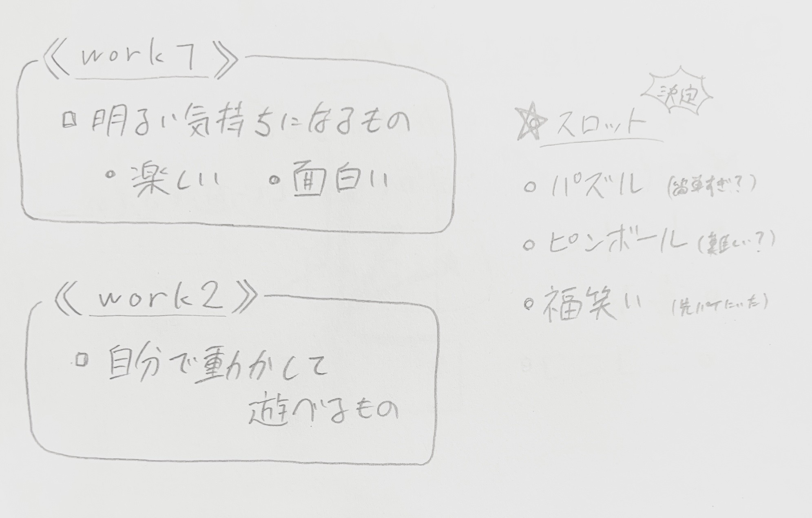

《 ストーリーボード 》
今回の課題は人の心を動かすものということで、明るい気持ちになれるものを作りたいと考えました。そこで何を作ろうかと迷っているときに、ギャンブル好きの推しがスロット配信をしているのを見て、
“スロット” を作れたら面白いなと感じ、"この作品を作るに至りました。


〈 製作構想 〉
・リールは１つ ←３つにしたかったが材料の関係で難しい。・ボタンを押したら、中にある板(ストッパー)が動きリールが止まる。
・ボタンの板にストッパーをつけ、押しすぎて中に入らないようにする。
slot.svg)
slot.svg)